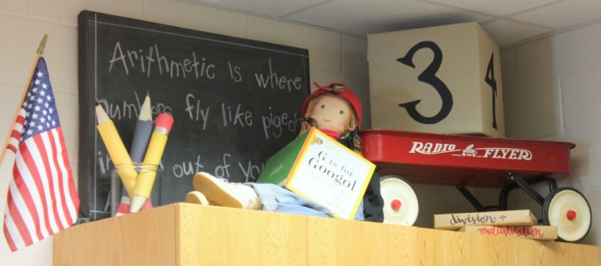

.png)
.PNG)
.PNG)
.PNG)
.PNG)
.PNG)
.JPG)
.JPG)
.PNG)
.PNG)


Can you believe we are already halfway through this end of summer month?! Â August is always a roller coaster ride of emotions for me, and this one has been no exception. Â With the string of St. Simons Island posts taking over the blog lately, I feel like we need to catch up with each other! Â So let’s start at the beginning of the month…
Normally, school does not start until August around here, so the roller coaster of emotions begins with the excitement of a new school year offset by the loss of summer freedom. Â Since our academic year began in July, the roller coaster ride started a little early.

Sunday, August 3rd was my birthday and our wedding anniversary.  I couldn’t decide whether I wanted a cake with caramel or chocolate frosting.  (Such a tough decision!)  So my husband made the executive decision in favor of the caramel cake. 🙂 He used a different frosting recipe than the one he has used in the past, but it only made enough frosting to do between the layers and the top. I had a brilliant idea to make a chocolate frosting for the sides.
.jpg)
It sounded like a good plan, but it actually wasn’t that great.  As daughter said, The chocolate with the cake is good.  The caramel with the cake is good…but the chocolate frosting with the caramel.. not so good.  So much for starting a new food fad! LOL  I will say the caramel frosting was absolutely delicious! (We’ll just need to double the recipe again the next time we make it.)
On the Monday after my birthday, my sweet friends at work surprised me with this in our break room:
 My cake baking friend makes THE most delicious cakes! (She is also the friend with the divine potato soup recipe. 🙂 )  This chocolate pound cake with the tunnel of chocolate frosting (like yummy fudge) is probably one of her most requested cakes, and we devoured it at work. It is her top secret recipe so I am afraid I cannot share it with you. Darn it.  My dip making friend made my favorite olive dip.  It is delicious with Tostitos scoops.  I can share that recipe with you:
My cake baking friend makes THE most delicious cakes! (She is also the friend with the divine potato soup recipe. 🙂 )  This chocolate pound cake with the tunnel of chocolate frosting (like yummy fudge) is probably one of her most requested cakes, and we devoured it at work. It is her top secret recipe so I am afraid I cannot share it with you. Darn it.  My dip making friend made my favorite olive dip.  It is delicious with Tostitos scoops.  I can share that recipe with you:
Later that same week, I got all excited about an email from one of Jan Karon’s publishers.  She told me the tour dates have been set for the new Mitford book tour AND she will be coming to Atlanta! 🙂
Here are the dates and locations:
9/2 Â Â Birmingham, AL: Alabama Booksmith @ The Cathedral Church of the Advent @ 6:30 PM
9/3 Â Â Lexington, KY: Joseph Beth Booksellers @ 7:00 PM
9/4 Â Â Dallas, TX: Authors Live! @ Highalnd Park United Methodist Church @ 7:00 PM
9/5 Â Wichita, KS: Watermark Books @ St. James Episcopal Church @ 6:00 PM
9/6 Â Atlanta, GA: Georgia Center for the Book with A Cappella Books @ Holy Trinity Parish, Decatur @ Â 7:00 PM
9/7 Â Raleigh, NC: Quail Ridge Books @ 7:00 PM
9/10 Lynchburg, VA: LifeWay Christian Store @ 6:00 PM
9/11  Richmond, VA: Fountain Bookstore @ St. Paul’s Episcopal Church @ 7:00 PM
9/14 Â Blowing Rock, NC: Fifth Annual Mitford Homecoming @ Chetola Resort @ 2:00 PM
Click  here for details about each event.  The Atlanta book signing is co-sponsored by The Georgia Center for the Book and A Cappella Books, and that wonderful bookstore is making it possible for us to order signed copies of Somewhere Safe with Somebody Good even if we cannot attend the event.  Click here for more information.
I don’t know if we will be able to make the Atlanta date, 🙠so I am thinking perhaps we could do the very last one in Blowing Rock, North Carolina.  It will be at the Chetola Resort.
We have driven past the beautiful lake and up to the inn a few times, but we have never stayed there. Â They are currently offering a special for the weekend of the Jan Karon Meet and Greet. Â You can find more information about it here. It sounds like a great package! (We probably need to call very soon because I am sure they will go fast – especially there.)
While we are on the subject of Jan Karon, I want to stop right here to discuss the Barbara Hinske books. I had a reader send me an email saying that she was not happy with the first book due to all the offensive language in it.  I had to agree with her, but I thought perhaps I was alone and  just being old fashioned in my reading preferences when I read the first one.  I think my children would think nothing of the language…not sure if that is good or not.  When I started reading the books, it was with the recommendation that the books were going to be similar to the Jan Karon books, so the large amount of bad language in the first one kind of threw me for a loop. I have asked writers before about why they have to put that in their books, and the usual answer is “to make their characters authentic.”  I get it, but for many people, bad language is a turnoff and keeps them from being entertained by the story.  I guess a writer really needs to know their targeted audience. What appeals to some does not necessarily appeal to other readers. So I am just telling you this in case you find the language offensive and are considering reading the books.  Her second and newest book is much better than the first and did not have much “bad” language in it at all. I loved the plot in both books, and it definitely draws you in. Phew!  Got all that?
Okay, so now to the winner of the books and the Amazon gift card. Â The winning number was this one:
 and it belonged to this comment:
and it belonged to this comment:
Congratulations Arlene!  I will be getting in touch with you to send you your prize.  Thank you to all of you who left your comments on the St. Simons Island posts.  I still have one more to share with you, but I think I will save that one for next summer.  I have something a little different for you for next week. 🙂
So where were we? Oh yes, the August roller coaster. Â Well, our daughter’s birthday was the Sunday after mine. Her boyfriend came for the weekend, and at daughter’s request, we had a quiche lunch for one of her celebrations. (Another girly Sunday meal.)
 The birthday banner is one I made years ago for her 16th birthday, (a random-acts-of-kindness party that you can read all about here) and the table runner is a roll of polka dot paper from Paper Source.
No homemade cake for her special day…She wanted petit fours from a local bakery. (She also says that one day she wants them for her wedding in place of a traditional cake!)
We spent that rainy afternoon seeing this delightful movie:
I LOVED it! Best movie I have seen in a very long time.  And if you haven’t been to see it then get off this blog post, and go see it right now. 🙂  It is precious…a feast for the eyes topped off with something sweet for your heart.  Here is the trailer…
The movie is based on this novel, that I am just going to have to read now.
A week or so ago One Kings Lane had a sale of many of the props from the movie. (The sale is now over. 🙠)  If I had seen the movie before the time of this shopping event, I know I would have tried to purchase that green bicycle.
Additionally, the movie has inspired Le Cordon Bleu to offer classes that recreate dishes from The Hundred Foot Journey. Click here to find out more if you are interested.
Our middle son’s birthday was last Wednesday, but he was still working in Atlanta, so we will have to celebrate his when he returns home next weekend.
And now let’s talk about a low point in this roller coaster ride of August. Â On Thursday we all learned of the very sad death of Robin Williams. Â He has always been one of my favorite actors who had such talent and heart. How awful that depression can take you to such dark places in life that death seems to be the only answer. Â But I don’t want to dwell on that dark part of his life. Â He was so much more than that. I want to remember him for all the smiles and laughter he brought to millions of people, and I think our President expressed the sentiments of so many in his condolences:
“Robin Williams was an airman, a doctor, a genie, a nanny, a president, a professor, a bangarang Peter Pan, and everything in between. But he was one of a kind. He arrived in our lives as an alien – but he ended up touching every element of the human spirit. He made us laugh. He made us cry. He gave his immeasurable talent freely and generously to those who needed it most — from our troops stationed abroad to the marginalized on our own streets.”
It was the role of bangarang Peter Pan that was my favorite of all of his roles. Â I loved Hook and have watched it over and over through the years. Â How could you not love that movie with Williams’ hilarious and heart tugging lines, Julia Roberts as Tinkerbell, a gang of rowdy but endearing 10 year old boys, Dustin Hoffman as a pirate, Maggie Smith as an all-grown-up and grandmotherly Wendy, an amazing musical score, and a beautiful old home set in London (at Christmas no less!)?
I have always said that adults should appreciate the movie more than children, and I ran across this article that supports that view as well.  If you are a fan of Hook, you will enjoy reading the article.  And if you haven’t seen the movie, watch it next weekend on Netflix and then go read the article.  It says everything I could have said about the movie and more (minus the loving Granny Wendy’s house part. 🙂 )
Robin Williams would have wanted us to find our “happy thoughts,” so while we are loving houses and Neverland, I have a nursery for you to see.
elletid.com photo by Melody Melikian PhotographyÂ
This Neverland nursery is the brilliant work of the talented designers at Elle T. in California. Â Their attention to detail is unbelievable. Â All the references to Peter Pan are amazing…the pirate ship, the map, the treasure chest, the tick tock clock, the bottle of pixie dust, the blocks with a “second star to the right,” (and a framed quote about it) a model of London’s Big Ben, dresser knobs with maps inside, and old copies of Peter Pan books. Â They have other nurseries in their portfolio, so I hope you will take a look around their website.
elletid.com photo by Melody Melikian PhotographyÂ
It has been a long time since we have needed a nursery in our home.  We moved our “baby” off to her junior year in college this weekend, and I will tell you more about that this week.  (More of the  roller coaster of emotions!)
And now I feel we have caught up on almost everything from this roller coaster month (except for one dinner I want to share with you next weekend.) I am at almost 1900 words in the word count for this post, and I need to stop! Â Hope you have had a good weekend. Â I will leave you with fond memories of Robin Williams and some scenes from Hook.
Find your happy thoughts.
Until next time…


.PNG)
I got to meet Jan Karon when she came to Birmingham. It was wonderful! She is so genuine and warm- and will shake everyones hand and is not camera shy. A real Southern gem!
———————————————————————-
OMG how lucky you were Vicki!! So jealous here. I know you enjoyed that evening, and I do wish I could have been there too. Hopefully there will be another book tour in the future (when I am retired!)
Kelly
Happy Birthday and Happy Anniversary!!! Boy, August is just full of celebration for y’all! January is like that for us.
You did cover a lot in this post! I loved to see your family in the pictures. I hope your school year is going well for you so far. You have such sweet teacher friends. They are the best, aren’t they? Hope the roller coaster slows down soon for you. Enjoy the ride!
———————————————————————-
Thank you Jayne! I don’t know if I could take a January like our August. That would be right on the heels of the Christmas holidays…quite exhausting! Yes, my teacher friends are great. 🙂
Kelly
Hubby and I will have our 44th Anniversary and as empty nesters we take our summer vacation in September it’s great no crowds and rates our low
Pamela in WV
———————————————————————–
Happy anniversary to you and your husband! How lucky for you to get to celebrate without all the crowds. 🙂 We might have to move our trips in the future to Sept. to do the same.:)
Kelly
Happy Birthday and Happy Anniversary–though belatedly. I think Robin Williams was a special kind of genius–comedic and a very caring human–so special and he’ll be sorely missed by many of his friends and of course, his family.
On a different note I share the same birthdate with your daughter. That would be only the month and day–unfortunately not the same year or even the same decade :-} So please wish her a belated Happy Birthday from me and I do wish her many many more. BTW I too love petit fours-an excellent choice!
Lastly, I hope you are able to make the Jan Karon weekend event. I can’t as I’m in CA but I can look forward to your report.
lj
——————————————————————-
Thank you so much for the birthday and anniversary wishes! I agree about Robin Williams. He was truly so special. Happy belated birthday to you! I wish our daughter could have shared some of the petit fours with you. 🙂 I am afraid our schedules don’t work with seeing Ms. Karon on this book tour. I am crossing my fingers that there will be another book and another book tour in the future.
Kelly
Oh, Kelly, this was a lovely post! I was entertained by the variety and quality (as always). Thank you for your tribute to Robin Williams -nicely done 🙂 Sending happy thoughts your way~
———————————————————————–
Oh there is definitely lots of variety here! I went all over the place in that post. LOL Thank you for reading and commenting. Hope you are having a good week.
Kelly
Kelly,
I’ve been so behind this month with answering my must read blog sites, sorry.
Where to begin…I’m so surprised to hear that there are schools in the country that begin in July and, as I remember, don’t get out for summer until June (is this correct?). I hope the roller coaster has leveled out and you’re enjoying a sweet sail into fall! The language in the book…I understand offense, but I tend to be tolerant if the the book is well written and enjoyable in every other sense. Language for me is easier to tolerate than violence.
Happy Birthday, my dad’s birthday was August 4th and while he’s been gone for many years, I always think of him on the 4th. The cake looks amazing, I would have caramel and chocolate would be a dreamy combo. I’m glad you shared the olive dip recipe. I’m a big fan of tapenade and will definitely try this.
I hope you enjoy these last few weeks of summer. I’m eager to read the Jan Karon book, you’ll have to share with us the signing and surrounds.
xo,
Karen
———————————————————————
Don’t apologize Karen. I have not had time to read blogs, so you are doing much better than I am! Yes we go back in July and get out right at Memorial Day. Their goal for starting so early is to be able to have final exams for the first semester right at Christmas break, so that the students don’t have to be tested after the holidays on material from before it. Kind of crazy I think.
I agree with you about being able to tolerate language more so than violence. I especially cannot handle violence towards women in anything. It really bothers me.
I am so sorry that your father is no longer with you, and I hope you remember him with sweet memories on his special day.
Definitely make that dip…so easy and SO good!
Kelly
That movie looks soooooo good. I might have to see it tomorrow to take my mind off of my empty house. It will be the first time in 12 years that one of my little people isn’t alongside me during the school day. 🙠xo, Tessa
——————————————————————–
Hi Tessa! The movie is wonderful wonderful. You will love it! It will make you want to cook up a storm….which will keep you busy until your guys return home from school. So I think seeing it is a great idea for you. 🙂
Kelly
I so enjoy your “Talk of the Weekend” posts as they are always so “newsy” as my grandma used to say. 🙂 What a wonderful husband and such sweet friends to make those delicious treats for your birthday! And what a terrific mama you are to prepare such a great meal for your daughter’s birthday.
We are big “Hook” fans in our house too. In fact, the day Robin Williams died, my son came running out to the kitchen as soon as I got home from school to ask if I’d heard the news. 🙠He was such an amazing, versatile performer who touched so many lives with his many talents.
Hopefully the rollercoaster of emotions will slow down soon. Have a wonderful rest of the week!
————————————————————————-
I am glad you like the random news in the Talk of the Weekend posts. Yep, my husband is a keeper, and my sweet friends are good cooks. 🙂
I think we need to start a Hook fan club. When I think of Robin Williams I think of him in his role as Peter Pan…not a bad way to remember someone.
The rollercoaster of emotions still has two more stops before the end of the month. Look for them in another weekend post. 🙂
Kelly
Wow . . . who says there’s nothing going on in August hasn’t been to your house! We are taking our oldest to college in two days. Sigh. So goes August.
———————————————————————-
You said it! Good luck with getting your oldest settled in for college. It took us the better part of two days, but the room is finally finished. Hallelujah!
Kelly
Happy Birthday wishes to you and your daughter… the combination of the caramel and chocolate really does sound great….so nice of hubby to make that for you…and Happy Anniversary to you too!…and I believe the entire world is grieving the loss of Robin Williams…he was such a great talent and truly had the gift to make us laugh…
————————————————————————
Thank you Shirley! My husband is always a good cake baker – better than me for sure. I agree that the world is grieving over the loss of a super talented soul. So sad.
Kelly
Robin Williams’ death hit me hard, too. So talented and so sad that he was in that much anguish. We have the same 8/3 anniversary! Happy belated birthday!
———————————————————————
Happy belated anniversary to you! And thank you for my birthday wishes. Robin Williams will be dearly missed. What a tragic end to a life that gave so much joy and laughter.
Kelly
Love the addition of the jalapenos to the olive dip! Yum I am pinning this one!!
——————————————————————-
If you like olives, you will love this Cindy! I am the only one in our house who eats them, so the dip at work was a BIG treat!
Kelly
I really enjoyed your post! Happy belated Birthday to you and the Leos in the family! (Mine was Aug. 1)
———————————————————————-
A belated happy birthday wish to you on your August 1st birthday! I think all of us Leos are taking over the world! LOL
Glad you enjoyed the post. Have a great week!
Kelly
Wonderful post, Kelly. As always! Happy (belated) Birthday and Anniversary, hope you enjoyed that celebratory weekend. I was thinking it was brilliant to add the chocolate frosted sides to the cake, not as good as it sounds, I guess. Your daughter had a birthday and a return to her junior year, ah, the marching on of time. Scary, how fast it goes. Robin Williams, such a tragedy – what a gifted actor who left us so many memorable performances. He will be missed by so many of us. And, I’d say you are back in the swing of things now, at school. Oh, my. We are getting the most out of our August even though things start to get busy for my husband before school actually starts in September. (He’s the Athletic Director of our high school.) We have our wedding anniversary this month, too, as well as a birthday. Yay, for cake and celebrations. Also, have a baby shower that I am baking for this morning. First to be born in the next generation of our family. Sweet! I hope things are settling down a little for you and that you have a nice long relaxing weekend coming up for Labor Day. I saw the Hundred Foot movie and loved it. Cried, too! Have a great week!
———————————————————————-
Thank you Paula – for liking the post AND for the birthday and anniversary wishes.:) I thought the idea for the mixed frostings was a good one…perhaps it needed a different kind of chocolate – dark maybe? I might just have to experiment with that one! Your August sounds like a busy one too, and if your husband is the athletic director, then your fall will be super busy! Wasn’t the Hundred Foot Journey just wonderful?! I cried too…in a good way. 🙂
Hope your week is off to a great start.
Kelly
I think the cake is lovely to look at, and sounds delish. I’m sure I could have “forced” myself to eat a slice…or two. Caramel cake and icing is my all time fave tho. We also let our “children” (all grown) decide what they want for birthday dinner. No one has ever requested quiche, but it sounds great! My school starts this week. Let the madness begin! Lori Lucas
——————————————————————-
I love caramel cake too…not butterscotch flavored caramel…the real stuff.:) The quiche dinner was a good and easy one..much easier than our middle child’s request for the Carraba’s copycat Chicken Bryan with goat cheese and sundried tomatoes. I hope your week has started off well with a low level of madness. LOL
Kelly
First off, Belated wishes to you Kelly on your Birthday and Anniversary. Wishes to your beautiful daughter too. Oh, birthdays. I just celebrated my 59th the end of July. Ouch! Need to take in this upcoming year before the big 60! I liked your daughter’s choice of quiche and petites. Love quiche for breakfast, lunch or dinner. Yummy! So nice to see a few family moments and such good sports they are! Will need to get out to see this movie maybe, since I opted out on the Diane Keaton, And so It Goes. Oh, Robin. Such a treasure. I loved him in Birdcage and Mrs. Doubtfire.
Debra
——————————————————————-
Thank you for all the birthday and anniversary wishes, Debra! Belated happy birthday wishes to you as well! I will be catching up with you in a few years. 🙂 I really loved the movie, and I hope you get to go see it.
Kelly
A delightful post. Oh, and if you google Pillsbury Bake Off Tunnel of Fudge Cake, you might find the “secret recipe”. I think it may have been one of the first (if not the first) Pillsbury Bake Off Winner.
————————————————————————-
Thanks for the recommendation on the recipe. I am thinking that her cake would be a chocolate pound cake with the icing being the one I make for my Texas cake. I will see if the Tunnel of Fudge has ingredients like that combination.
Kelly
Happy belated birthday, Kelly!! I’m very jealous of the chocolate pound cake – I know it was delicious. Your blog makes me miss home and everyone at The Chapel. I’m with your daughter and the petit fours too…so delicious! Loved your post and tribute to Robin Williams as well.
———————————————————————–
Hi Kayleigh!!! So good to hear from you. Yes, you do know that delicious chocolate cake AND those bakery petit fours! It was all very good, and I wish we could have had you here to share it all with you. I hope you are enjoying your new home and your new job. We miss you!
Kelly
Thank you for this post, Kelly. Now I have two movies (haven’t seen Hook),and a book(love Jan Karon)to look forward to. Happy Birthday to you, your daughter and your son. You clearly know how to celebrate life!
———————————————————————–
Well good! You better get busy on your book and movies then Jennifer. 🙂 Thank you for the birthday wishes. I hope you are having a great week!
Kelly
Great post, Kelly! Exactly what I wanted to read on a Sunday night as I gear up for a full week. We had meetings last week Monday and Tuesday and started school Thursday. I helped my sister move this weekend and now I am wrapping up my school work to start my week off up to date. I can’t wait to see what you have in store for us in your next post! Let me know if you ever get the super secret chocolate cake recipe! 😉
———————————————————————-
Sounds like you are in full swing with school and everything else Dawn! Hope this week is going well for you. I will definitely share if I get that super secret recipe. 🙂
Kelly
You always give me a lift when I see your post in the InBox. It
is one that is Never deleted until read and looked over in detail. And this time, as usual, you didn’t disappoint. Thank you for being sensitive to what we might not want to read in the way of offensive language. Thank you, Thank you, Thank you. Jan
Karon’s books are wonderfully written, well thought out plots,
and nary a word that could not be recommended to others.
And speaking of Jan, thank you for keeping us abreast of the schedule for her new book.
And Happy belated Birthday from a fellow August girl. Blessings,
as Always.
———————————————————————-
I am glad that the blog posts give you a lift Joan. Happy birthday wishes to you as well for your August birthday! We should all just have a big b-day party together…with lots of caramel cake. 🙂
Kelly
First, I am so excited to be the winner of your give away Kelly! Second, Happy Birthday and Happy Anniversary. I always love seeing your house decorated for celebrations. Third…we LOVE Hook, here at our house and fourth, I just read a wonderful children’s book, The MIraculous Journey of Edward Tulane. We have had a sad week here in Nanaland with the diagnosis of our three year old grandson as autistic, then some dear friends lost their 18 year old son over the weekend. So just reading your blog lifted my spirits and made me forget about the stresses here for a while. Love you and your blog!!
———————————————————————
Congratulations Arlene! With all the sadness you have had lately, I am glad there was a bright spot of good news for you. 🙂 I looked up the book you recommended. It is by the author of Because of Winn Dixie, and sounds like it would be a wonderful story (that brings on the tears.) Thanks for the recommendation! I am going to look for it in our school library.
I hope your week has started out good.
Kelly
Hi Kelly: So loved this blog! Happy Birthday and Happy Anniversary belated! I am sooo very jealous that you might be going to Blowing Rock to see Jan but thank you for posting the dates for her book tour. It just so happens I will be in Raleigh on the 7th. I hope to be able to see her and perhaps get her to autograph the book I have yet to purchase:-) What a treat! Loved your daughter’s birthday dinner. Gives me inspiration for my upcoming granddaughter’s birthday. Perhaps I need to ask her what she would like:-) Your husband is a treasure even though the cake was a bit of a disappointment but it certainly had all my favorite elements in it…carmel and chocolate. Can’t believe you started the school year in July…seems like I just read the blog that said you couldn’t wait for your vacation to start. Where does time go??? Anyway, thank you for such a delightful blog! And thank you for the tip about the movie. Will try to go soon!….Blessings!
———————————————————————-
You are the lucky one to be in Raleigh and able to go to the Jan Karon book signing event! So glad you liked the b-day dinner. Yes, we went back to school in July…middle of the summer in my mind! Thank you for the kind comments about the blog and the birthday and anniversary wishes. I hope you do get to see the movie. It was a good one!
Kelly
What month so far! I think chocolate + caramel cake sounds delish. I, too, am a fan of Hook. What are your thoughts on Finding Neverland? I loved it. Hope you have a great week!!
———————————————————————–
Finding Neverland was good to me but oh sooo very sad. I loved the music. It was gorgeous!
I hope you are having a wonderful week Maria.
Kelly
What a nice way ( a new post from you) to end a very wonderful weekend with family and friends celebrating 50 years of marriage! Everything was lovely— 20 for an Italian Lunch only 2 miles from our home and then back to our lake house for a reproduced wedding cake with our 50 year old topper plus a pineapple punch! And a gift of 2 weeks at Beech Mt. the last 2 weeks of October which is near Boone and Blowing Rock!! Now seeing you are going there one month before and a new Mitford book! My! I love the green bicycle– and was just thinking how nice one would look parked by our white picket fence! You are so inspiring and such a role model to all of us to have lovely family gatherings. And now my husband’s gift to me— to go this week and find a beach home to buy!! I am so flying high!!! Mercy! My cup runneth over! 🙂
———————————————————————
CONGRATULATIONS on your 50 years of wedded bliss!! It sounds like your celebration was perfect. 2 weeks at Beech Mountain would have been gift enough, but “go find a beach home!!!” OMG. Boy am I jealous!!!! I hope you find one that is everything you want it to be.
Congratulations again girl!
Kelly
My parents both have birthdays and an anniversary in August, so today we celebrated their 62nd anniversary and 88th and 89th Birthdays…a busy month for us too! I think I may have liked your caramel/chocolate icing – two of my favorites! We saw the Hundred Foot Journey last weekend and like you, my husband and I agreed that it was by far the best movie we’ve seen in a long, long time. Wishing you a great start to your week!
———————————————————————
Your August is as busy as ours. I forgot to mention we have a nephew and a niece that also have August birthdays! Happy birthday wishes to your parents and a congratulations on their amazing 62nd wedding anniversary. Wow! Good to hear another recommendation for the movie. I think we may go to see it again. (I liked it that much!) I hope you are having a good week!
Kelly
Hi Kelly….I sure enjoy reading your blog. Just wanted to say my wedding anniversary is also August 3rd, we just celebrated our 40th. The time sure does fly, it doesn’t seem possible. I start back to school in 1 week so I am savoring those last few days although I am always ready to see the children. Have a great week. P.S. I see the movie “You’ve Got Mail” is on shortly, that might be my Sunday evening….one of my favs!! Loved the tour of St. Simons!!! Mickey
————————————————————————-
Congratulations on your wedding anniversary too! We are not quite at 40 years (but if you count the 10 years we dated, we would be getting close!) Enjoy your last week of summer freedom. Can’t believe we have almost been back a month! You’ve Got Mail is a good movie to put you in the mood for fall.
Glad you liked all the St. Simons posts, and I hope your school year starts wonderfully!
Kelly
You did cover a lot in this post!
August is a crazy busy month for you… Happy birthday and anniversary! The cake looked great, what a wonderful husband you have. I was sure you were going to say the chocolate and caramel were divine, but sometimes too much of good thing is just too much.Your daughter’s birthday meal looked delicious. Your August is like my May, lots of birthdays,anniversaries, graduations and of course….Mother’s Day.
I look forward to seeing the movie…although it will probably be when it is out on DVD.
————————————————————————-
Yes, I did! I thought for sure that would be a great combo for the cake…maybe it was just too rich. I think your May is probably more demanding than our August since you throw in graduation and Mother’s Day with everything else. I don’t think I could handle one more thing in this month!
Definitely watch The Hundred Foot Journey!
Kelly